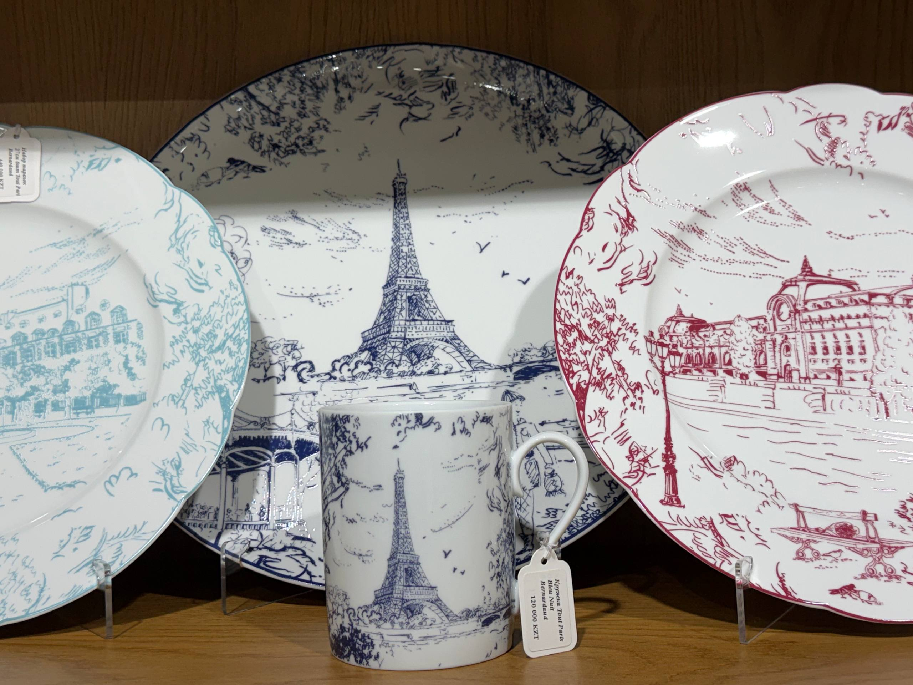

A LITTLE CARE, EVERY DAY
Made to be
looked after.
Keep your favourite pieces ready for the next occasion. Always follow the instructions for your particular item.
Your care checklist ↓
KEEPING THINGS BEAUTIFUL
A guide to everyday care
01 Before the first use
Read the product label and keep the manufacturer's instructions. Check whether your piece is intended for food or decoration.
Unsure about cleaning? Ask the store before using appliances or cleaning products.
02 Materials & finishes
Glass, porcelain and decorative finishes can need different care. Confirm washing and temperature guidance for the exact product, especially pieces with metal decoration.
03 Storing porcelain
Avoid tall stacks, use separators between stacked pieces, and avoid putting pressure on handles.
Bernardaud care guidance ↗04 Before you buy
Ask which cleaning products to use, whether appliances are suitable, and how to store the piece. Check dimensions before choosing a larger set.
Ask us a question ↗READY FOR THE FIRST USE?
Three small checks
A simple reminder before you begin.
You're ready. Keep the instructions for next time.
Your checks are not saved after leaving this page.
A question about your piece?
We're here to help you find the right care information.